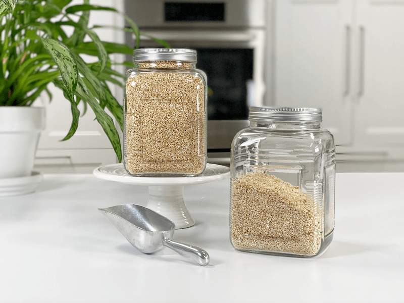
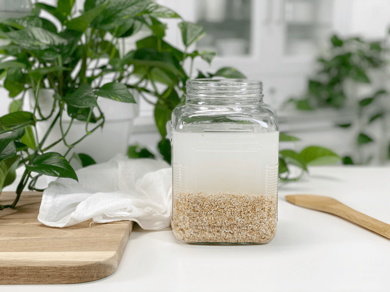
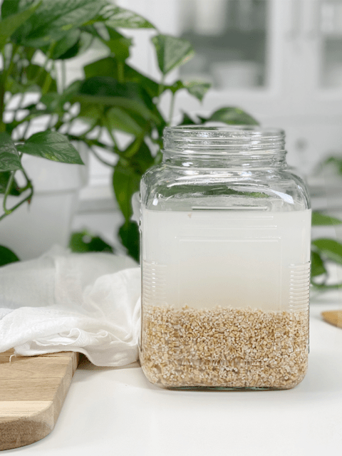

Steel Cut Oats | Why Soak and How
Steel-cut oats are an excellent source of soluble fiber that also acts as a prebiotic food, which, in turn, feeds the friendly bacteria in your gut. The ripple effect is that it turns around and helps the gut bacteria produce nutrients for your colon cells and leads to a healthier digestive system. Without a healthy digestive system, we can’t take in all the nutrients that we need. So let’s learn to make every bite count!

Another reason that I love steel-cut oats is that they are less processed than old-fashioned rolled oats, which means that they have a lower glycemic index. The reason for this difference is that it takes longer for digestive enzymes to reach the starch inside the thicker pieces, slowing down their conversion to sugar. So if you want a bowl of oats that will keep you satiated and dole out a steady flow of energy…well, you just might want to give steel-cut oats a try.
Oats: Defining the Options
- Oat groats: Also known as whole oats or oat kernels, these are the most intact form and least processed. Only the outermost inedible hull is removed. They are not steamed and rolled, like old-fashioned (regular) oats.
- Steel-cut oats: Oat groats that have been cut into two or three pieces with steel blades.
- Rolled oats: Oat groats are steamed, flattened, and dried. Though somewhat processed, rolled oats are still a whole grain. They are also known as Irish Oats.
- Quick Oats: These have been pre-steamed, rolled very thinly, and cut into smaller pieces. They are not nearly as flavorful as other options. They are the thinnest, and thus, the mushiest.
- Instant Oats: These are pre-cooked and simply need hot water added. They have little nutrition and are relatively bland and mushy.
- Oat bran: The finely ground meal of oat groats’ bran layer – though not technically a whole grain, it has similar health benefits with its high fiber and low starch content.
Are They Gluten-Free?
Although oats are naturally gluten-free, they are typically grown alongside grains such as wheat and barley, which contain gluten, which is why many people with gluten intolerance cannot eat them. However, pure, uncontaminated, certified gluten-free oats can usually be tolerated by those with celiac disease. So, be sure to look for “gluten-free” on the bag when purchasing them. But it’s important to know that oats contain a protein called avenin, which can trigger an immune response similar to that of gluten in some people with celiac disease. So, please proceed with caution if gluten is an issue for you.
Oats Are a Resistant Starch
Never heard of that before? Not sure what it even means? Most of the carbs you consume, such as those in grains, pasta, and potatoes, are starches. Some types of starch are resistant to digestion, hence the term resistant starch. Resistant starch functions similarly to soluble, fermentable fiber, helping feed the friendly bacteria in your gut and increasing the production of short-chain fatty acids like butyrate. Studies have shown that it can help with weight loss and benefit heart health, as well as improve blood sugar control, insulin sensitivity, and digestive health (1, 2, 3).
To benefit from resistant starches, proper preparation is key. I start by soaking, followed by cooking. After cooling in the fridge, I gently warm them when ready to eat (they’re also good cold, if you prefer that).

How to Make Every Bite Count—Why I Soak My Oats
There’s nothing better than a nice soak, and your oats and digestive tract will thank you for it! The main reason I soak oats is to reduce phytic acid, which blocks the digestive enzymes in the body. It also binds to essential minerals like iron, zinc, and calcium, making them difficult to absorb.
There are some health benefits to phytic acid, so don’t go using it as a curse word, but there are times when we can get too much in the body. If you eat a lot of foods that are high in phytic acid (nuts, grains, seeds, fresh produce, etc.), you suffer from digestive issues, or you have mineral imbalances…then you might want to seriously start soaking some of your ingredients before cooking/eating them. I have a whole section on the site called “Soaking Nuts, Seeds, and Grains.” There is a lot to learn if you want to take your eating patterns to a whole new level—but please, do not stress over it! Let me help guide you with grace and ease.

Ingredients
- 2 cups steel-cut oats
- 2 Tbsp raw apple cider vinegar or lemon juice
- Pinch of salt
- Warm water
Preparation
- In a large bowl, combine the oats, vinegar or lemon juice, and salt. Add enough warm water to cover them by a few extra inches, as they will expand a little bit while soaking.
- Cover with a linen towel and let sit on the counter overnight (12-24 hours).
- If it is warm in your house, above 70 degrees (F), change the water out a few times.
- Once they have soaked, pour them into a colander and rinse under cold water.
- Some people use the soaking water when cooking them, and others rinse it away. I can’t seem to find a detailed study that has been done on which is the right way. Personally, I rinse the soak water away. It seems logical to me.
- Now they are ready to cook! Keep in mind that regardless of the method you use, the cooking time will be shorter since they have softened through the soaking process.
© AmieSue.com